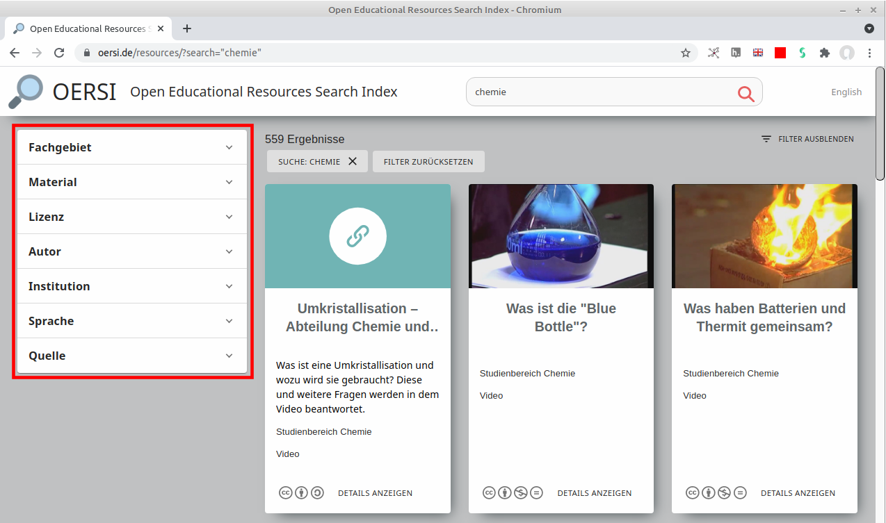
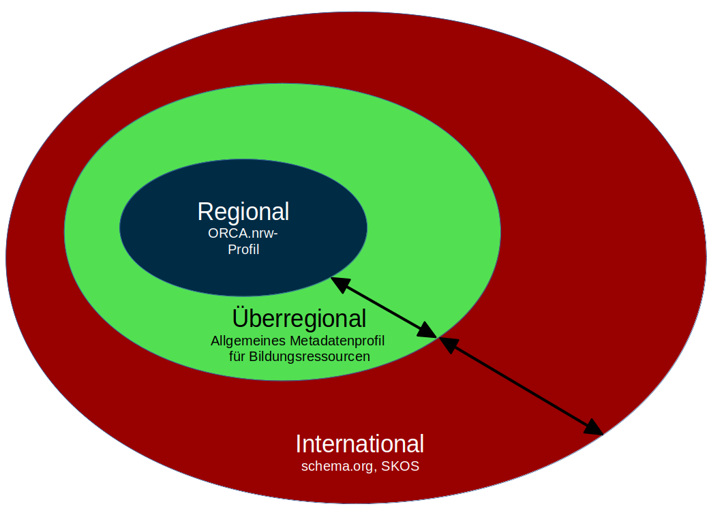
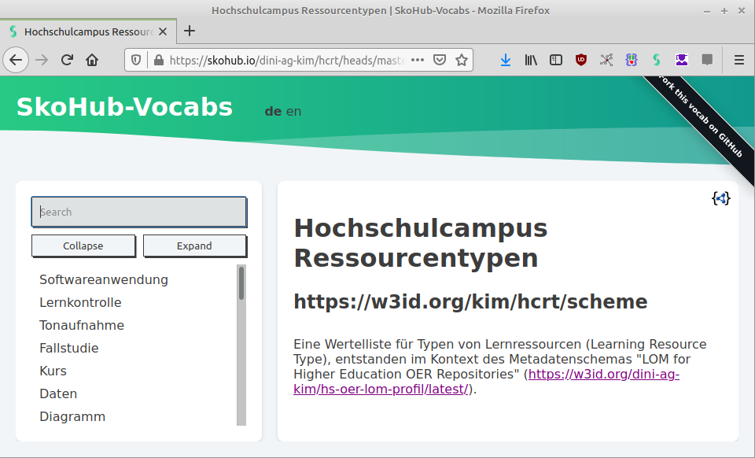
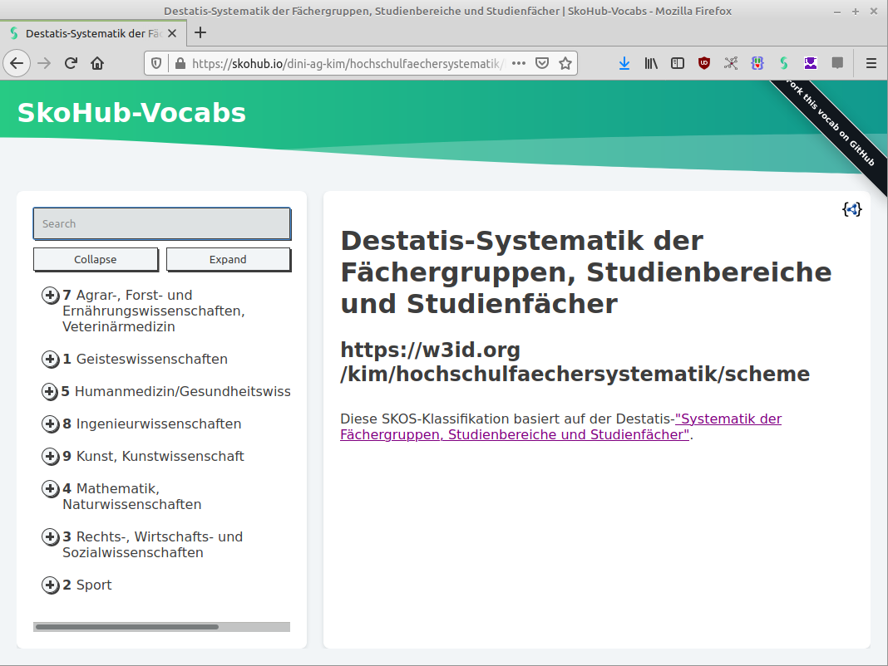
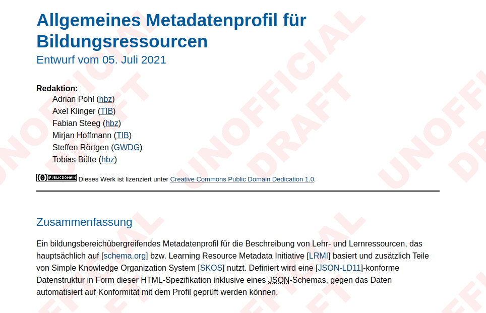

ORCA-Metadaten-Infrastruktur
Adrian Pohl
Offene Infrastruktur, Hochschulbibliothekszentrum NRW (hbz)

Lehre verindet NRW, 08.07.2021
Diese Präsentation:
http://slides.lobid.org/2021-07-08-lehre-verbindet-nrw/

Hochschulbibliothekszentrum des Landes Nordrhein-Westfalen, seit 1973
Dienstleistungs- und Entwicklungseinrichtung für digitale Services in Hochschulbibliotheken
Einige Arbeitsbereiche: Verbundkatalog, Suchportal DigiBib, Fernleihe, Konsortiale Erwerbung
Metadaten
Metadaten sind ein Infrastrukturthema und damit technisch. Ich versuche aber, auf einer allgemeinverständlichen Ebene zu bleiben.
Was sind Metadaten?
Element-Wert-Paare zur Beschreibung einer Ressource:
Typ: Präsentation
Urheber: Adrian Pohl
Titel: ORCA-Metadaten-Infrastruktur
Warum Metadaten?
Damit relevante Lehr- und Lernressourcen einfach und schnell gefunden werden können.
Damit relevante Lehr- und Lernressourcen einfach und schnell gefunden werden können.
OERSI & ORCA
Für die OER-Recherche in ORCA.nrw wird OERSI integriert
OERSI = OER Suchindex, oersi.de
gemeinsames Projekt von hbz und TIB seit Januar 2020
entstanden im Rahmen der KMK OER Repo AG
Zielgruppen: Endnutzer*innen (OERSI-Frontend) und Entwickler*innen (OERSI-API)
OERSI-Architektur

Beim Bau eines Suchindex über verschiedene Quellen sind Metadaten zentrales Thema.
Welche Metadaten?
Welche Metadaten?
Inhaltserschließung (Fach, Thema) und Ressourcentyp: wichtige Rolle für Discovery
Titel, Urheber, Lizenz: wichtig für Urheberrechts-/Lizenzangaben
OERSI-Filter
Interoperabilität durch Standardisierung
Probleme mit Metadaten
Typ: Präsentation
Urheber: Adrian Pohl
Titel: ORCA-Metadaten-Infrastruktur
Thema: Metadaten
Format: Presentation
Creator: Pohl, Adrian
Name: ORCA-Metadaten-Infrastruktur
Subject: Metadata
Vergabe minimaler standardisierter Metadaten ist wesentliche Gelingensbedingung für ein Projekt wie ORCA.
Aspekte der Standardisierung
Kodierung der Metadaten: Datenformat
Namen und Struktur der Elemente: Metadatenschema
Mögliche Werte: Kontrolliertes Vokabular
Art der Publikation und Schnittstellen zum Abruf der Metadaten
Berücksichtigung bestehender Standards
Datenformat: de-facto Standard JSON(-LD)
Metadatenschema: basierend auf schema.org
Kontrollierte Vokabulare: Nachnutzung einer Destatis-Klassifikation, Publikation als strukturierte Daten im Web
Standardisierungsebenen
Gegenseitiger Einfluss
Überregionale Aktivitäten
DINI AG KIM: Kompetenzzentrum Interoperable Metadaten
ein überinstitutioneller, institutions- und projektunabhängiger Rahmen zur Standardentwicklung
Standardisierung von Metadatenschemas und kontrollierten Vokabularen
Kontrollierte Vokabulare
 Metadatenschema
ORCA-spezifische Vorgaben
gelten für Erfassung von Material aus den Förderprojekten
Verpflichtung zur Angabe von Urheber
Verpflichtende Auswahl einer der Lizenzen: CC BY-SA 4.0, CC BY 4.0 oder CC 0
weiteres ist noch in Diskussion
Projektspezifische Metadaten
gelten für Erfassung von Material aus den Förderprojekten
Verpflichtung zur Angabe von Urheber
Verpflichtende Auswahl einer der Lizenzen: CC BY-SA 4.0, CC BY 4.0 oder CC 0
weiteres ist noch in Diskussion